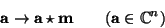
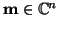
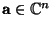
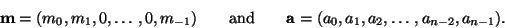

Although convolution is symmetric, I want to interpret the action of
convolving by a fixed element of
 , and to emphasise the
asymmetry I will call the fixed element
m rather than b. We
thus consider the map
, and to emphasise the
asymmetry I will call the fixed element
m rather than b. We
thus consider the map

for a fixed element . We will call such a fixed element a mask or filter. How does filtering (convolving with a fixed mask) affect , often called the signal?To get an initial understanding, it helps to choose a simple filter, so let

From the definition, we have
Solution This is simple arithmetic, based on Equation 6.6.
| 0 | 0 | 2 | 4 | 1 | 0 | 0 | 0 | 0 | 0 |
| 0 | 0 | 3 | 7 | 1 | 4 | 6 | 2 | 0 | 0 |
It may be easier now to see why the language of signals and filters
was used. In this case, the filter
m has acted as a smoothing
filter; the two pronounced peaks in the
original signal have been spread out; indeed, looking at
m it may
now be clear that it is indeed a prescription to smooth the central
element by incorporating a contribution from either side. For
convenience in calculation, this particular filter also amplified the
signal. However the effect may have been easier to understand if the
filter had been scaled so that the total mass (the sum of all the
values in the filter) was set to 1. This would involve multiplying
a m by 1/7.
m by 1/7.
The effect of convolution has been to ``do the same thing'' to each of the elements of the incoming signal a. In this case it was easy to do the convolution directly because the support (the number of non -zero elements) of m was small. As the support becomes larger, the gain from implementing such a filter using Fourier transforms and the convolution theorem becomes significant.
In passing we note another name for m, since we can recognise m as the (reveresed) output corrsponding to input 10 in the notation of Section 6.4. It is thus sometimes called the point spread function, or perhaps the instrument response function. From this viewpoint, displaying the mask as (m0,..., mn - 1) is not particularly convenient; it is usually easier to visualise the effect if presented as